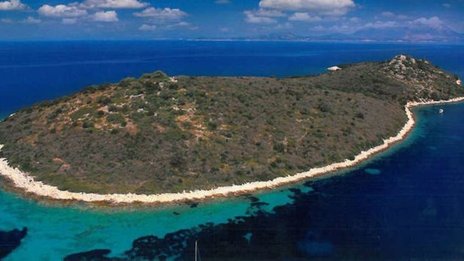

Ημερομηνία: 11 Ιανουαρίου 2018
Συντάκτης:
Στα χέρια του σούπερ σταρ της Μπαρτσελόνα, Λιονέλ Μέσι πέρασε μία ελληνική νησίδα κοντά στην Ιθάκη στο Ιόνιο Πέλαγος.
Την ανακοίνωση έκανε το μεσιτικό γραφείο του Αλεσάντρο Πρότο, «Proto Group Ltd», το οποίο ενημέρωσε μία ημέρα νωρίτερα για την πώληση στον μάνατζερ ποδοσφαιριστών, Μίνο Ραϊόλα, ενός άλλου ελληνικού νησιού, που ο Κριστιάνο Ρονάλντο είχε κάνει δώρο στον ατζέντη του, τον Ζόρζε Μέντες, για τον γάμο του.
Η ανακοίνωση της «Proto Group Ltd» κατέληγε επισημαίνοντας ότι υπάρχουν πολλά νησιά προς πώληση στην Ελλάδα και πως αρκετοί «αστέρες» του ποδοσφαίρου και του Χόλιγουντ έχουν εκδηλώσει ενδιαφέρον, ζητώντας σχετικές πληροφορίες.

Ένας από αυτούς λοιπόν ήταν και ο σούπερ σταρ της Μπαρτσελόνα, ο οποίος αγόρασε τη νησίδα Σοφία, η οποία βρίσκεται στο Ιόνιο πέλαγος και πιο συγκεκριμένα στο νησιωτικό σύμπλεγμα των Εχινάδων, ανατολικά της Ιθάκης.
«Μπορούμε να επιβεβαιώσουμε ότι ο παίκτης Λέο Μέσι αγόρασε ένα νησί στην Ελλάδα, πιο συγκεκριμένα, το νησί Νήσος Σοφία. Ο Μέσι είναι ήδη πελάτης μας, έχοντας αγοράσει μέσω ημών ένα υπέροχο ρετιρέ στο Παρίσι» ανέφερε χαρακτηριστικά το εν λόγω μεσιτικό γραφείο.
Η Σοφία είναι το πέμπτο μεγαλύτερο νησί του συμπλέγματος μετά τον Πεταλά, την Οξεία, την Δρακονέρα και το Προβάτι με 170 στρέμματα.
Υπενθυμιζεται ότι το 2013 η οικογένεια Κωνσταντίνου στην οποία άνηκε το νησί, προέβη σε πώληση μέσω πλειστηριασμού στη Νότια Αφρική. Τελικά, το αγόρασε ένας Νοτιοαφρικανός υπήκοος (δεν δόθηκαν περισσότερα στοιχεία) έναντι του ποσού των 2,8 εκατ. ευρώ για να καταλήξει πέντε χρόνια αργοτερα στα χέρια του αστέρα των Καταλανών.
Πηγή: www.eleftherostypos.gr